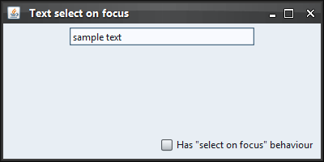
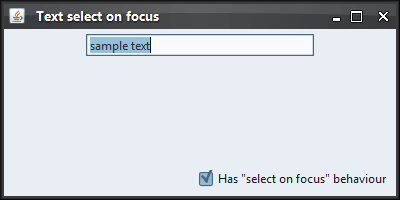

|
import java.awt.BorderLayout;
import java.awt.FlowLayout;
import java.awt.event.ActionEvent;
import java.awt.event.ActionListener;
import javax.swing.JCheckBox;
import javax.swing.JFrame;
import javax.swing.JPanel;
import javax.swing.JTextField;
import javax.swing.SwingUtilities;
import org.pushingpixels.lafwidget.LafWidget;
import org.pushingpixels.substance.api.SubstanceLookAndFeel;
import org.pushingpixels.substance.api.skin.BusinessBlackSteelSkin;
/**
* Test application that shows the use of the
* {@link LafWidget#TEXT_SELECT_ON_FOCUS} client property.
*
* @author Kirill Grouchnikov
* @see LafWidget#TEXT_SELECT_ON_FOCUS
*/
public class TextSelectOnFocus extends JFrame {
/**
* Creates the main frame for <code>this</code> sample.
*/
public TextSelectOnFocus() {
super("Text select on focus");
this.setLayout(new BorderLayout());
final JTextField jtf = new JTextField("sample text");
jtf.setColumns(20);
JPanel main = new JPanel(new FlowLayout(FlowLayout.CENTER));
this.add(main, BorderLayout.CENTER);
main.add(jtf);
JPanel controls = new JPanel(new FlowLayout(FlowLayout.RIGHT));
final JCheckBox hasSelectOnFocus = new JCheckBox(
"Has \"select on focus\" behaviour");
hasSelectOnFocus.addActionListener(new ActionListener() {
public void actionPerformed(ActionEvent e) {
jtf.putClientProperty(LafWidget.TEXT_SELECT_ON_FOCUS,
hasSelectOnFocus.isSelected() ? Boolean.TRUE : null);
}
});
controls.add(hasSelectOnFocus);
this.add(controls, BorderLayout.SOUTH);
this.setSize(400, 200);
this.setLocationRelativeTo(null);
this.setDefaultCloseOperation(JFrame.EXIT_ON_CLOSE);
}
/**
* The main method for <code>this</code> sample. The arguments are ignored.
*
* @param args
* Ignored.
*/
public static void main(String[] args) {
JFrame.setDefaultLookAndFeelDecorated(true);
SwingUtilities.invokeLater(new Runnable() {
public void run() {
SubstanceLookAndFeel.setSkin(new BusinessBlackSteelSkin());
new TextSelectOnFocus().setVisible(true);
}
});
}
}
The screenshot below shows a text field when this property is
not installed. The text field is clicked (focus transferred to it)
and the text is not selected:

After installing this property on the text field,
clicking on this field (that gains focus) selects all the text:

|